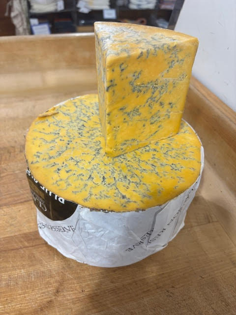
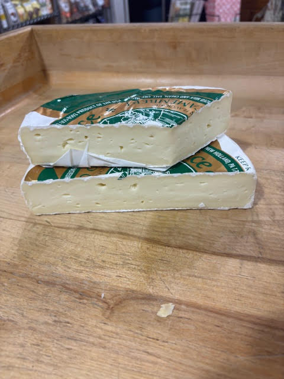
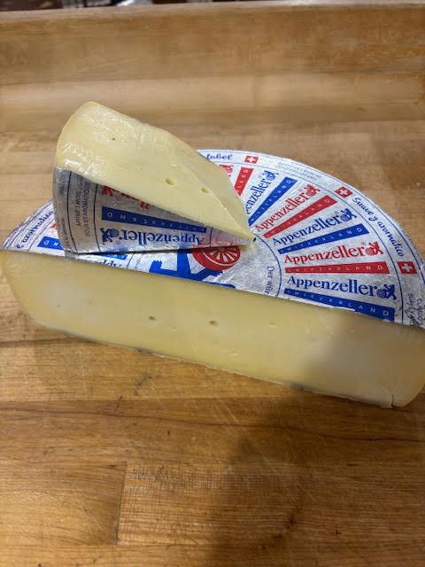
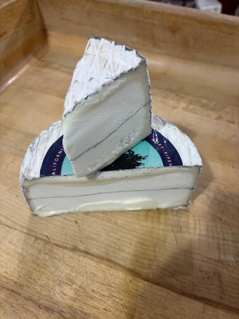

| Image | Name | Type | Location produced | Time aged |
|---|---|---|---|---|
| Ruby Rouge | Farmhouse Dutch Gouda | Netherlands | 6-7 months | |
|  | Shropshire Blue | Blue Cheese | England | 3 months |
|  | Camembert | Soft Cow Milk Cheese | France | 5-6 weeks |
|  | Appenzeller | Hard Cow Milk Cheese | Switzerland | 3-6 months |
|  | Humboldt Fog | Goat Milk Cheese | USA | 2-3 weeks |